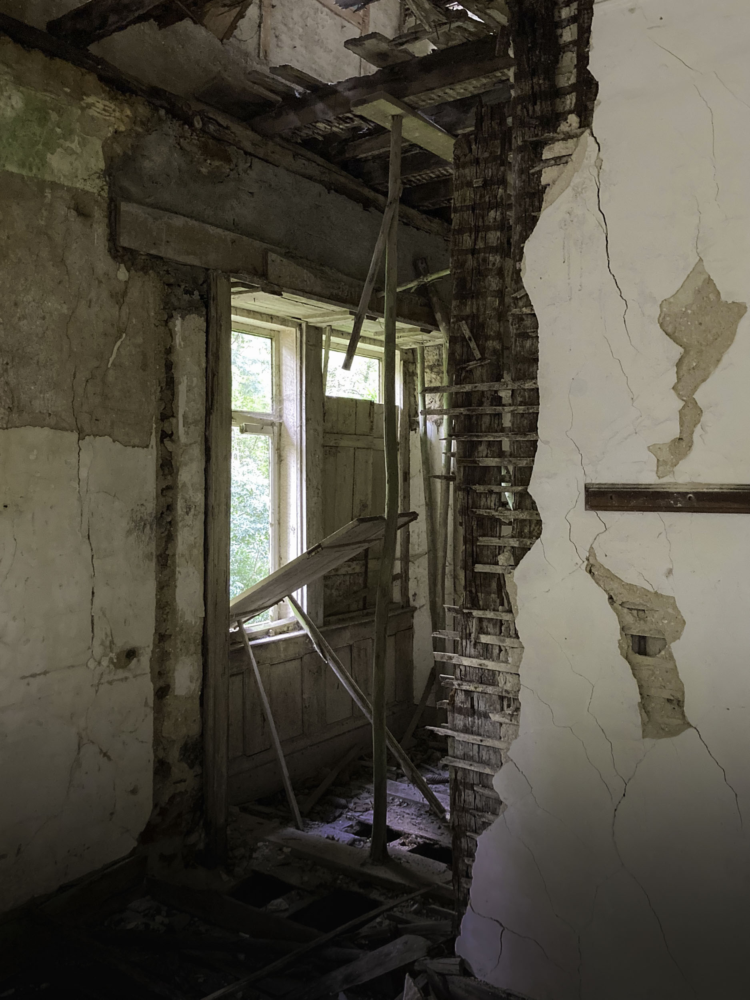
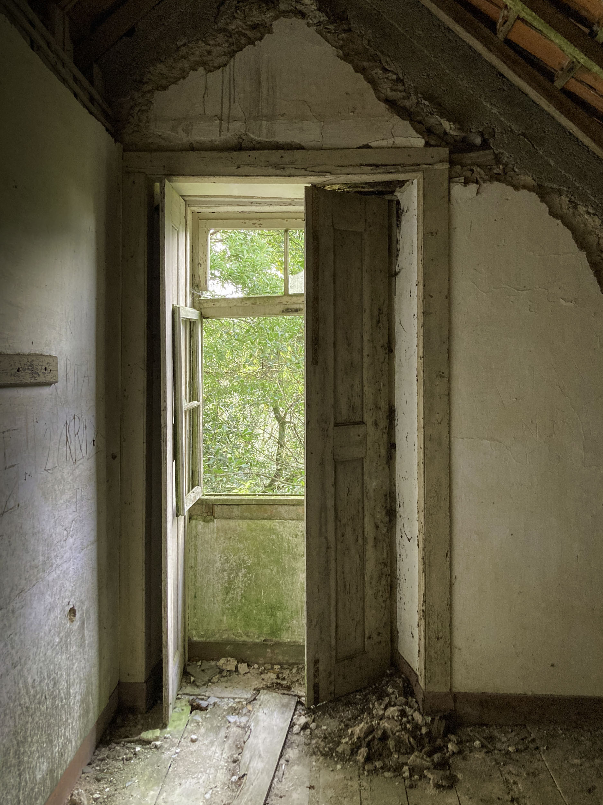
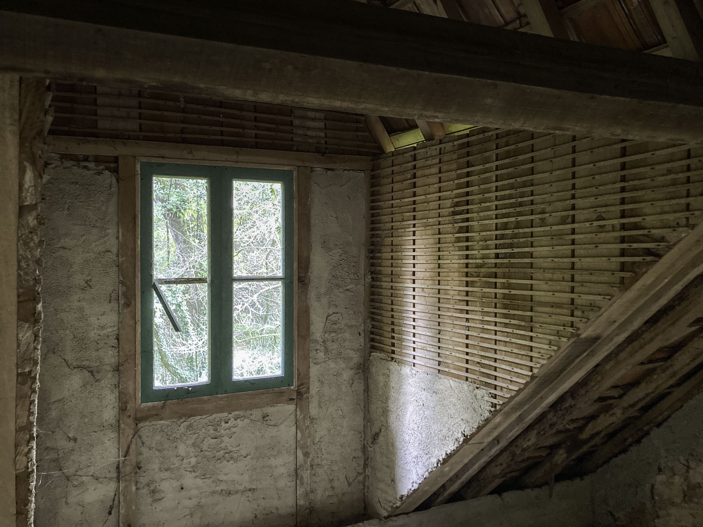
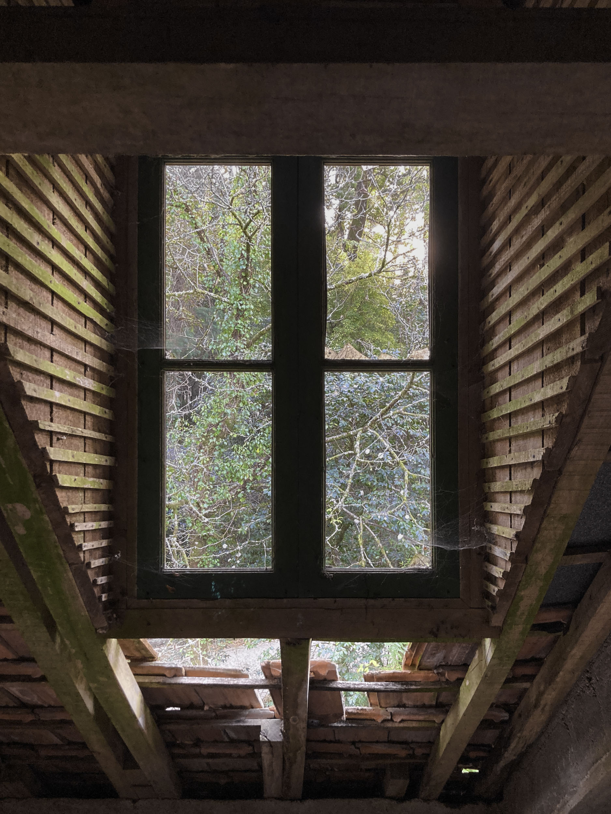
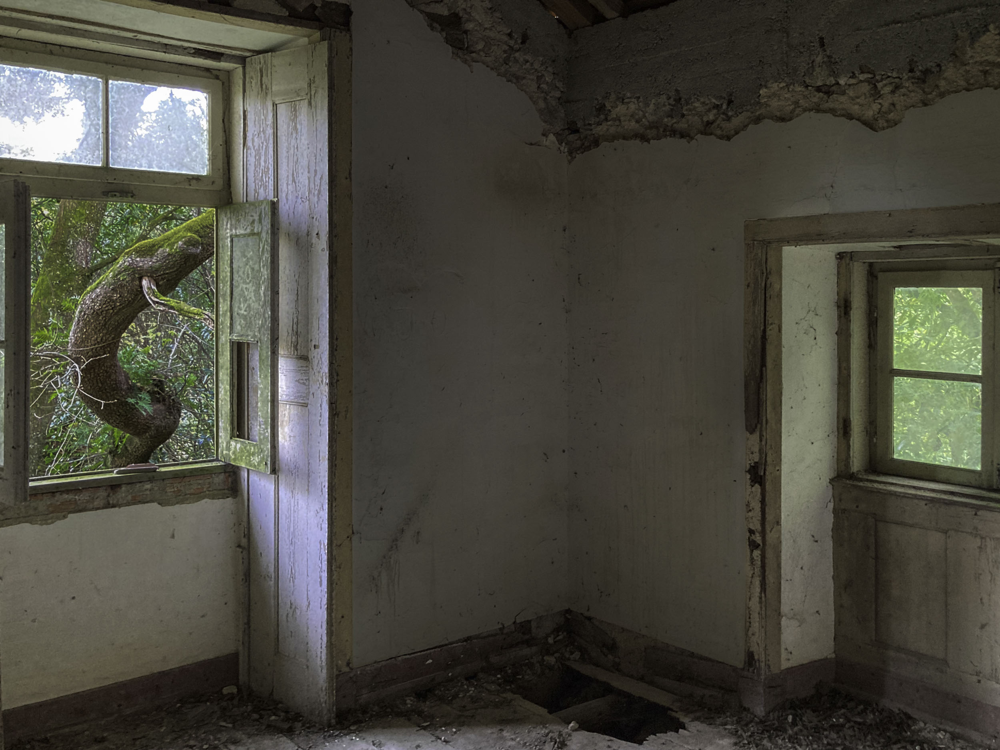

Nas ruínas do Buçaco, as divisões permanecem, mas as fronteiras desaparecem. A luz, a vegetação e o exterior entram lentamente nos espaços abandonados.
Interior com paisagem






Nas ruínas do Buçaco, as divisões permanecem, mas as fronteiras desaparecem. A luz, a vegetação e o exterior entram lentamente nos espaços abandonados.




